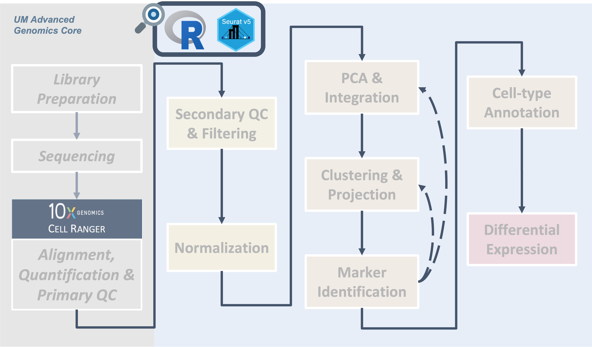
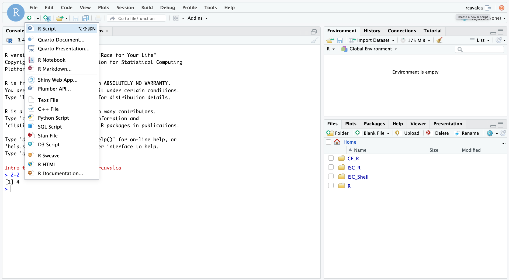
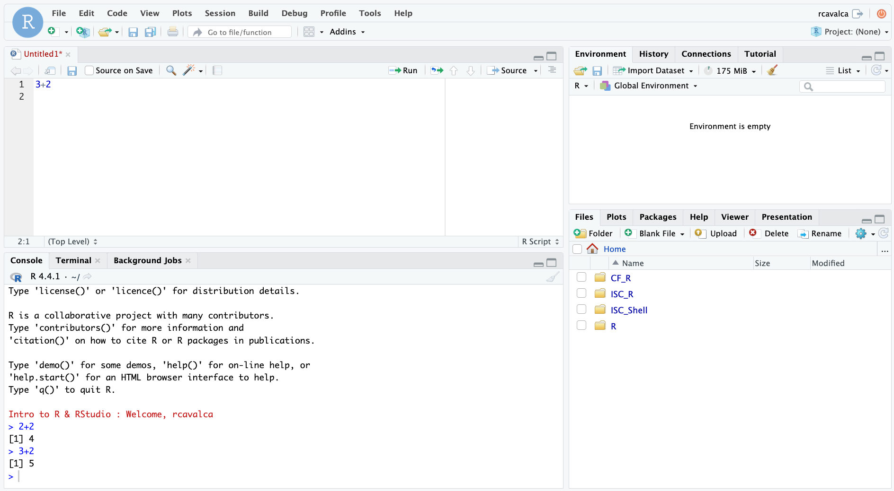

Getting Started with Seurat
UM Bioinformatics Core Workshop Team
2025-04-11

Introduction

|
| Cell Ranger outputs can be read into R via the triple of files directly, or via a memory saving route with the BPCells package. We provide code for both routes in this section. |
One of the goals of this workshop is to work through an example from
start to end, and to highlight some of the decision points and
rationales behind the decisions. The first step of any single-cell
project will be to get the data into R for analysis.
Objectives
- Orient on RStudio.
- Create an RStudio project for analysis.
- Create directory structure for analysis.
- Learn how to read Cell Ranger data into Seurat.
- Introduce the Seurat object, and how to access parts of it.
Orienting on RStudio
RStudio is an integrated development environment where you can write, execute, and see the results of your code. The interface is arranged in different panes:
- The Console pane along the left where you can enter commands and execute them.
- The Environment pane in the upper right shows any variables you have created, along with their values.
- The pane in the lower right has a few functions:
- The Files tab let’s you navigate the file system.
- The Plots tab displays any plots from code run in the Console.
- The Help tab displays the documentation of functions.
Commands in the Console
We can input commands directly into the Console and press Enter to execute them. Try it with:
> 2+2
[1] 4If we enter commands directly into the Console and execute them, there is no record that persists after we close RStudio.

Checkpoint
Commands in the Script
To keep that record, we will enter our commands in a script. When first opening RStudio, there is no pane to write code to save as a file. But by clicking on the icon in the upper-right-most of the interface (a blank piece of paper with a + sign), and selecting R Script a new pane opens. This last pane is the Source (or Script) pane, and it is here that we’ll keep a running record of the commands we learn in this workshop.

Which will swing open the Script pane:

In the Script pane, enter:
3+2Notice that if we press Enter in the Source pane, we get a new line. The code does note execute. In order to execute the code we press Ctrl + Enter on the line of code we want to execute. We then see that code executed, along with its result in in the Console pane.

Note: Script Pane and Console Pane
The code written in the Script Pane is just text until it is executed with Control + Enter. The Console Pane is the record of the code that has been executed.
Configuring RStudio
All of the panes in RStudio have configuration options. For example, you can minimize/maximize a pane or resize panes by dragging the borders. The most important customization options for pane layout are in the View menu. Other options such as font sizes, colors/themes, and more are in the Tools menu under Global Options.
We can enable soft-wrapping of code by selecting Code and then Soft Wrap Long Lines.

Workshop Flow
The code we execute together is available in three forms:
- By viewing the instructor’s Zoom screen share,
- By code pasted into Slack, and
- By code blocks on these web pages.
As a learner you are welcome to get the same code into your Script Pane by:
- Typing the code from the Zoom screen share into your Script Pane,
- Copying the code from Slack and pasting into your Script Pane, or
- Copying the code from the code blocks on these web pages and pasting into your Script Pane.
Questions?
Creating a project
We will create an RStudio Project to keep our files and code organized. See the Projects section of R for Data Science for a more in-depth description of what a project is and how it’s helpful.
To create a Project for this workshop, click File then
New Project…. In the New Project Wizard window that opens,
select Existing Directory, then Browse…. In the
Choose Directory window, select the ISC_R folder by
clicking it once, and then click the Choose button. Finally,
click Create Project.
Once we do this, RStudio will restart and the Files pane (lower
right) should put us in the ~/ISC_R folder where there is
an inputs/ folder and an ISC_R.Rproj file.
Directory structure
We have included the data to be used in the workshop in the
inputs/ folder. However, the project will need to include
folders for our analysis and our analysis scripts. Let’s create that
directory structure with the dir.create() function. We will
start by putting the following commands into the Console pane
directly.
# Create project directories
dir.create('scripts', showWarnings = FALSE, recursive = TRUE)
dir.create('results/figures', showWarnings = FALSE, recursive = TRUE)
dir.create('results/tables', showWarnings = FALSE, recursive = TRUE)
dir.create('results/rdata', showWarnings = FALSE, recursive = TRUE)In the Files pane we should see the new results/ and
scripts/ folders.
Analysis script
The two most important artifacts of our analysis are the data from
Cell Ranger, and the script to analyze the data. There will be outputs
in results/, and these will be important, but if the
contents of results/ are ever lost, the script will be able
to re-generate them if we’ve captured all our steps as code, which we
aim to do.
To create the analysis script, click File, hover over
New File, and click on R Script. A new pane in the
upper left slides into view and is the Untitled script file. Save this
file, and name it, by clicking File then Save.
Double click the scripts/ folder, and in the File name:
text box type “analysis.R”. Then click Save.
As we proceed through the workshop, we should save this file (by clicking the Floppy disk, clicking File then Save, or by typing Control + S).
Good scripting practices
In any analysis script, we recommend using comments (lines preceded by a “#”) to provide additional information about code that may not be self-evident. This is to the benefit of others that may look at the code, but also to your future-self.
For completeness, insert the dir.create commands at the
top of our new script.
# =========================================================================
# Getting Started with Seurat
# =========================================================================
# -------------------------------------------------------------------------
# Create project directories
dir.create('scripts', showWarnings = FALSE, recursive = TRUE)
dir.create('results/figures', showWarnings = FALSE, recursive = TRUE)
dir.create('results/tables', showWarnings = FALSE, recursive = TRUE)
dir.create('results/rdata', showWarnings = FALSE, recursive = TRUE)Loading libraries
We begin our analysis script by loading the libraries we expect to
use. It’s generally good practice to include all library()
calls at the top of a script for visibility.
# -------------------------------------------------------------------------
# Load libraries
library(Seurat)
library(BPCells)
library(tidyverse)
options(future.globals.maxSize = 1e9)The libraries that we are loading are:
- The
Seuratlibrary, developed by the Satija lab, which will provide the essential functions used in our single-cell analysis. The Seurat documentation is extensive and indispensible. - The
BPCellslibrary, developed by Benjamin Parks, is a recent package with the primary goal of efficiently storing single-cell data to reduce its memory footprint. The BPCells documentation includes many useful tutorials. - The
tidyverselibrary, developed by Posit, is an essential package for data manipulation and plotting. The tidyverse documentation is essential for getting a handle on the array of functions in the many packages contained therein.
Read in data
The inputs/10x_cellranger_filtered_triples/ folder is
closer to what AGC would generate with Cell Ranger, where each sample
has a folder, and within that folder there are three files:
barcodes.tsv.gzfeatures.tsv.gzmatrix.mtx.gz
Note, these files are filtered matrices, AGC will touch on filtered and unfiltered Cell Ranger outputs.
Read10X
The Read10X() function will read in the triples
organized within sample folders:
# -------------------------------------------------------------------------
# To load data from 10X Cell Ranger
# Collect the input directories
# Each sample dir contains barcodes.tsv.gz, features.tsv.gz, matrix.mtx.gz.
# Naming the sample_dirs vector makes Seurat name the
# samples in the corresponding manner, which is nice for us.
sample_dirs = list(
HODay0replicate1 = "inputs/10x_cellranger_filtered_triples/count_run_HODay0replicate1",
HODay0replicate2 = "inputs/10x_cellranger_filtered_triples/count_run_HODay0replicate2",
HODay0replicate3 = "inputs/10x_cellranger_filtered_triples/count_run_HODay0replicate3",
HODay0replicate4 = "inputs/10x_cellranger_filtered_triples/count_run_HODay0replicate4",
HODay7replicate1 = "inputs/10x_cellranger_filtered_triples/count_run_HODay7replicate1",
HODay7replicate2 = "inputs/10x_cellranger_filtered_triples/count_run_HODay7replicate2",
HODay7replicate3 = "inputs/10x_cellranger_filtered_triples/count_run_HODay7replicate3",
HODay7replicate4 = "inputs/10x_cellranger_filtered_triples/count_run_HODay7replicate4",
HODay21replicate1 = "inputs/10x_cellranger_filtered_triples/count_run_HODay21replicate1",
HODay21replicate2 = "inputs/10x_cellranger_filtered_triples/count_run_HODay21replicate2",
HODay21replicate3 = "inputs/10x_cellranger_filtered_triples/count_run_HODay21replicate3",
HODay21replicate4 = "inputs/10x_cellranger_filtered_triples/count_run_HODay21replicate4")
# Create the expression matrix from sample dirs
# Read10X needs a *vector* instead of a *list*, so we use *unlist* to convert
geo_mat = Read10X(data.dir = unlist(sample_dirs))Write BPCells
We could create a Seurat object with
CreateSeuratObject(counts = geo_mat), but we will first
output geo_mat using the BPCells package to save
memory:
# -------------------------------------------------------------------------
# Build BPCells input dir
# To use BPCells (to save some memory), you can transform
# the expression matrix data structure above into BPCells files.
# BPCells uses these files for processing, but you typically never look at
# their contents directly
write_matrix_dir(mat = geo_mat, dir = '~/ISC_R/bpcells', overwrite = TRUE)32285 x 35269 IterableMatrix object with class MatrixDir
Row names: Xkr4, Gm1992 ... AC149090.1
Col names: HODay0replicate1_AAACCTGAGAGAACAG-1, HODay0replicate1_AAACCTGGTCATGCAT-1 ... HODay21replicate4_TTTGTCACAGGGAGAG-1
Data type: double
Storage order: column major
Queued Operations:
1. Load compressed matrix from directory /home/workshop/cgates/ISC_R/bpcells# -------------------------------------------------------------------------
# Cleanup
# Since we'll now be reading in from BPCells files, we will remove geo_mat
# from the environment and then prompt RStudio to run a "garbage collection"
# to free up unused memory
rm(geo_mat)
gc() used (Mb) gc trigger (Mb) max used (Mb)
Ncells 9159071 489.2 17466748 932.9 11848562 632.8
Vcells 41077899 313.4 686073055 5234.4 1071451558 8174.6Read BPCells
Let’s read the BPCells files in, and note that the
geo_mat object takes up less memory than when we created it
with Read10X():
# -------------------------------------------------------------------------
# Create expression matrix and Seurat object from BPCells files
geo_mat = open_matrix_dir(dir = '~/ISC_R/bpcells')Create a Seurat object
The expression matrix is the precursor to creating the
Seurat object upon which all our analysis will be done. To
create the Seurat object:
# -------------------------------------------------------------------------
# Create seurat object
geo_so = CreateSeuratObject(counts = geo_mat, min.cells = 1, min.features = 50)
geo_soAn object of class Seurat
26489 features across 35216 samples within 1 assay
Active assay: RNA (26489 features, 0 variable features)
1 layer present: countsWe have specified some parameters to remove genes and cells which do not contain very much information. Specifically a gene is removed if it is expressed in 1 or fewer cells, and a cell is removed if it contains reads for 50 or fewer genes. In the context of this workshop, this helps us minimize memory usage.
molecule_info.h5 as an alternative input to Seurat
H5 (aka HDF5) is an alternative file format
Some programs (like Seurat) need only the barcodes, features, and matrix (counts) and those data are conveniently provided as three separate files for each sample. Other programs (like Cell Ranger) need to store more information (e.g. probe info about certain library preps or the chip or channel that cell ran on). Instead of adding more files to complement the three base files above, 10x provides a single binary file, molecule_info.h5, which contains all information for all molecules. (Strictly only the molecules with valid barcode/UMI assigned to a gene.)
- molecule_info.h5 is a single file, but with really acts like basket of related structures (think tables) for a single sample.
- The “.h5” extension stands for HDF5, a broadly adopted, platform agnostic, scalable, high-performance file format for storing complex data.
- You can view the data within the .h5 file with special tools like HDF5View or h5dump. Here is an excerpt of the structures inside that file:
molecule_info.h5
├─ barcodes [HDF5 group]
├─ count
├─ features [HDF5 group]
├─ gem_group
├─ library_info
├─ metrics_json
├─ probes [HDF5 group]
├─ ...
└─ umiYou can see the first structures above are barcodes, features, and counts. So if you have the hdf5 libraries installed, you can use the .h5 as input to Seurat like so:
# ==========================================================================
### DO NOT RUN ###
# To load data from raw .h5 file
### DO NOT RUN ###
HODay0replicate1 = "~/ISC_Shell/cellranger_outputs/count_run_HODay0replicate1/outs/molecule_info.h5"
get_mat = Read10X_h5(filename = HODay0replicate1)
geo_so = CreateSeuratObject(counts = geo_mat, min.cells = 1, min.features = 50)
If you want to load multiple samples from .h5 files, see the function Read10X_h5_Multi_Directory in the scCustomize R library.
FYI
- Be aware, using HDF5 files from R support requires the hdf5 library which entails a few more steps to install than a typical library. Brew a nice cup of (decaf) tea and review how to install hdf5.
- See the Seurat function Read10X.
- See BPCells docs for details on loading from h5 to a BPCells directory.
- 10x Genomics details the full contents of molecule_info.h5.
- Checkout the HDF5 reference docs for more information about the HDF5 format.
Structure of a Seurat object
The Seurat object is a complex data type, so let’s get a
birds eye view with an image from this
tutorial on single-cell analysis.
Seurat
object.The three main “slots” in the object are:
- The
assaysslot stores the expression data asAssayobjects. - The
meta.dataslot which stores cell-level information, including technical and phenotypic data. - The
reductionsslot stores the results of dimension reduction applied to theassays.
There are other slots which store information that becomes relevant as we progress through the analysis. We will highlight the other slots as they come up.
After reading the data in and creating the Seurat object above, we can imagine the following schematic representing our object:
Note the RNA assay contains a count layer consisting of
a raw count matrix where the rows are genes (features, more
generically), and the columns are all cells across all samples. Note
also the presence of a meta.data table giving information
about each cell. We’ll pay close attention to this as we proceed. The
other slots include information about the active.assay and
active.ident which tell Seurat which expression data to use
and how the cells are to be identified.
Accessing parts of the object
The only slot of the Seurat object that we’ll typically
access or modify by hand–that is, without a function from the
Seurat package–is the meta.data object. In R,
slots are accessed with the @ symbol, as in:
# -------------------------------------------------------------------------
# Examine Seurat object
head(geo_so@meta.data) orig.ident nCount_RNA nFeature_RNA
HODay0replicate1_AAACCTGAGAGAACAG-1 HODay0replicate1 10234 3226
HODay0replicate1_AAACCTGGTCATGCAT-1 HODay0replicate1 3158 1499
HODay0replicate1_AAACCTGTCAGAGCTT-1 HODay0replicate1 13464 4102
HODay0replicate1_AAACGGGAGAGACTTA-1 HODay0replicate1 577 346
HODay0replicate1_AAACGGGAGGCCCGTT-1 HODay0replicate1 1189 629
HODay0replicate1_AAACGGGCAACTGGCC-1 HODay0replicate1 7726 2602Here, each row is a cell, and each column is information about that
cell. The rows of the table are named according to the uniquely
identifiable name for the cell. In this case, the day and replicate, as
well as the barcode for that cell. As we continue the workshop, we will
check in on the meta.data slot and observe changes we want
to make, and that other functions will make. We’ll also observe the
other assays and layers and note their changes.
Save our progress
Let’s Save our progress as an RDS file with saveRDS();
this allows us to have a copy of the object that we can read back into
our session with the readRDS() commmand. Periodically we
will be saving our Seurat object so that we can have a version of it at
different steps of the analysis. These will also help us get untangled
if we get into an odd state.
# -------------------------------------------------------------------------
# Save the Seurat object
saveRDS(geo_so, file = 'results/rdata/geo_so_unfiltered.rds')Now that the state of our analysis is saved on disk, we’ll demonstrate how to power down the RStudio session, restart the session, and re-load the data we just saved.
- To power down the session, click the orange power button in the upper right corner of the RStudio window. Note: There is no confirmation dialogue, the session will simply end.
- Click the “Start New Session” button to restart the RStudio session.
- Re-load the
geo_soobject with:
# -------------------------------------------------------------------------
# Load the Seurat object
geo_so = readRDS('results/rdata/geo_so_unfiltered.rds')
Summary
|
|
| Cell Ranger outputs can be read into R via the triple of files directly, or via a memory saving route with the BPCells package. We provide code for both routes in this section. |
In this section we:
- Created an RStudio project for analysis.
- Created the directory structure for analysis.
- Learned how to read 10X data into Seurat.
- Introduced the Seurat object, and how to access parts of it.
These materials have been adapted and extended from materials listed above. These are open access materials distributed under the terms of the Creative Commons Attribution license (CC BY 4.0), which permits unrestricted use, distribution, and reproduction in any medium, provided the original author and source are credited.
| Previous lesson | Top of this lesson | Next lesson |
|---|